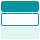

PART ONE
Overview
PROJECT OVERVIEW
The Mission
The Ankor Design System (ADS) is a collection of UI foundations, components, patterns and standards used to create harmonious product experiences. We’re on a mission to make it easy for teams to design, develop and deliver high-quality user interfaces. This project was getting the Ankor Design system from 0 to an open beta.
Ankor Software
Role: Project Design Lead
Key Responsibilities:
- Own end-to-end release to Open Beta
- Conduct user research with design leadership
- Create design system tooling
- Publish documentation and educational material
- Drive adoption
- Deliver roadmap to General Availability
PROJECT OVERVIEW
The Problem
The existing workflow relied on a component library built with Tailwind, along with a few scattered engineering documents. However, these resources weren’t centralised and didn’t cover the full scope of Ankor’s products. While this setup worked for a small design and engineering team with limited outputs, it became increasingly inefficient as Ankor grew. With expansion came growing pains. We needed a more unified, scalable system that would allow us to move faster and build products more efficiently.
Without a design system, Ankor designers lack guidance for visual design. Our projects look and use components that are inconsistent, hand over errors are immanent and Developers need to reinvent the wheel each time.
User Sentiment
01 The framework – flowbite doesn’t meet their needs.
02 Don’t know how to set it up
03 Not sure where to apply it or capabilities
04 Missing features and components we need
05 Documentation and tooling to use are none existent
Business Impact
01 Inconsistent looking products
02 Unresponsive products leading to poor user experience
03 Design and engineering miscommunication
PROJECT OVERVIEW
The Solution
Define a new design system standard and tooling, enabling designers and engineering to drive consistency across all products, breakpoints, modes and meet accessibility requirements.
Addressing User Sentiment
01 Fit for purpose – meets the needs of markers and each product
02 Easy to use – easy to set up, supported by documentation
03 Flexible – Guidelines on when to follow the rules or break them
Business Impact
01 Consistent looking products – drives visual design consistency across products
02 Responsive design – ensures usability for all screen sizes, modes and meets accessibility requirements.
03 Improved productivity – a shared language for design & engineering
PROJECT OVERVIEW
How is a Design System Structured?
Drawing from the work of Bradfrost in their work of Atomic Design, the design system needed to function
as a working biome with integrated ecosystems, organisms, modules and atoms.
The atoms represented design
tokens such as colours, fonts, shadows, spacing, icons, etc. These elements never exist purely on their own
and instead combine to form molecules, simple UI components like buttons or form fields.
Molecules then join to create organisms such as navigation bars or cards, which together form complex templates and ultimately fully realised pages.
This structured approach ensured scalability, consistency, and a clear hierarchy across the entire design ecosystem.
Atoms
Atoms are design tokens like colours, fonts, and shadows.
Molecules
Molecules are small, reusable components such as buttons, inputs, or avatars.
Organisms
Organisms are larger UI assemblies like forms, cards, or navigation bars.

Ecosystems
Ecosystems represent full page layouts or templates that combine multiple organisms.
Biome
Biomes are the overarching design systems that unify all ecosystems under consistent design principles and brand identity.
PROJECT OVERVIEW
My Impact
As the Design System Lead, I delivered an organised, component library, instructions with tooling to improve visual design quality at scale for 5 current products (and future ones) for a team of 12 developers and three designers.
Addressing User Sentiment
- Provided tooling for our designers, improving productivity with a component+styles library and external facing documentation
- Outlined the engineering friendly component library, to Open Beta release, delivering landings and stretch goals ahead of schedule
- Delivered customer-led solution, using research, interviews, workshops, competitive analysis, and audits
organisational Influence
- Reduced organisational chaos, aligning teams and designers around a consistent Design standard
- Improved design efficiency, reducing cognitive load and ambiguity with scalable design systems tooling
- Upskilled Ankor designers, with internal and external training materials Reduced manual design escalation, with self-service components and documentation
PROJECT OVERVIEW
Design Process
I approached this design challenge with two different types of thinking:
- Divergent:Keeping an open mind
- Convergent: Narrowing down to the best idea
.png)
PART TWO
DISCOVERY
DISCOVERY
Layers
Traditional design systems are made up of:
- Design Language
- Design Kits
- Component Library
- Dev Sandbox
- Docs & Guidelines
- Feedback Loops
- Governance Model

DISCOVERY
Competitor Analysis
I evaluated industry Standards and best practices for design systems technology.
Key Insights
- Storybook dominates
- Figma is standard
- Governance is structured
- Most use public documentation portals
DISCOVERY
Technology Review
I evaluated industry leading Development Sandboxes and best practices for design systems. Since we were already using Flowbite and Tailwind I needed to verify that Story book would work with those frameworks.
Key Insights
- Story Book is the best Development Sandbox Tool for our requirments
Foundations
- No documented design principles or tokens — only ad hoc Hex codes in code.
- No single source of truth. Designers and developers work from different places.
- No clear ownership; each designer uses their own approach → inconsistent patterns and language.
Assets & Component Libraries
- Figma library exists but is incomplete, disorganized, and not linked to projects.
- No tokens, variables, or pattern structure. Manual syncing with dev code.
- Naming conventions are inconsistent between design and code.
- No version control or changelog.
Documentation & Structure
- No dedicated documentation tool or hub.
- Extremely hard for new team members to find what they need.
- No clear information hierarchy, ad hoc and scattered across tools.
- No consolidated interactive examples or usage guidelines.
Governance & Adoption
- No rules or criteria for component inclusion.
- Consistency relies on design reviews — often bypassed due to time pressure.
- No tracking or metrics on usage or adoption.
- Major pain points: inconsistent UI, wasted dev/design time, friction between teams, leadership misalignment.
Feedback & Contribution
- Feedback happens in project files only, never at the system level.
- No formal contribution process.
- No approval or stewardship of changes — anyone can add to the system.
- Cleanup happens maybe once a year.
DISCOVERY
Internal Audit
I conducted a internal audit of our current working files and found
Key Insights
- The Figma Library needs more comprehensive componentry and documentation
- A story book workfile needs to be planned for and started immediately
- Feedback loops need to be clarified
- Guidelines on what makes it into the design system needs to be clarified
- Overall refinement of truth, tokens used and updates need to be addressed
PART THREE
Define
Designer Based Tasks
- Guideline on what makes it into the Design System
- Define Version control
- Build token variable library -> export to Json for development
- Guides on how to use each component -> concurrent creation of components within figma and when to prescribe them
- Refine and expand on agreed Component Library in figma to include commonly used components we already or plan to use in the future

Developer Based Tasks
- Guideline on what makes it into the Design System
- Define Version control
- Agree on naming convention between design and engineering teams
- Refine and expand agreed apon Component Library in storybook to include commonly used components we already or plan to use in the future

Criteria For success
- Ease of use & adoption by development and design team
- Reduction of hand over errors
- Design consisteny and responsivness across apps
- Ongoing upkeep & growth
DEFINE
Technology Architecture
In collaboration with our Chief technology officer, we were able to define the technology architecture for the design system
PART FOUR
Develop
The following section outlines a few highlights from the develop stage of the project.
Atoms Tokens
- Design language - Must be defined
- Design Kits - TailWind & flowbite
- Component Library - Figma Based with token variable organisation
- Dev sandbox - StoryBook
- Docs & guidelines - Need to be confirmed
- Feedback loops - Through Asana Ticketting
- Feedback loops - Through Asana Ticketting
Tasks
- Feedback happens in project files only, never at the system level.
- No formal contribution process.
- No approval or stewardship of changes — anyone can add to the system.
- Cleanup happens maybe once a year.